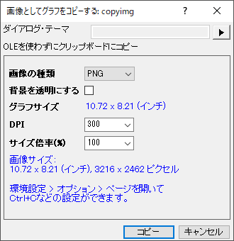
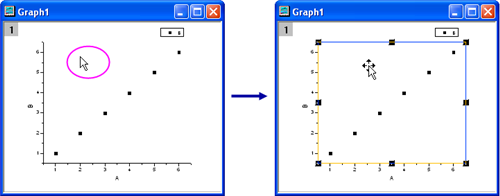
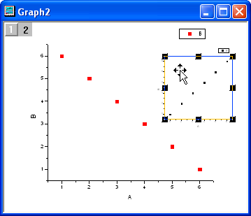
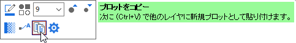

Origin内のグラフへのコピーと貼り付け
CopyPaste-Graph
グラフページや個別のグラフレイヤをコピーして貼り付けたり出来ます。いくつかの操作はグラフの画像を挿入し、他の操作は編集可能なグラフを挿入します。
グラフページを画像としてコピーして貼り付け
- グラフウィンドウのタイトルバーでクリックしてグラフページを選択します。
- メニューから、編集：画像としてグラフをコピーするを選択します。
または
グラフのミニツールバーにある画像としてグラフをコピーするボタン をクリックする。
をクリックする。
または
グラフを右クリックし、コンテキストメニューからコピー：画像としてグラフをコピーするを選択する。
または
グラフウィンドウをアクティブにし、Ctrl + Alt + Jを押す。
- グラフを画像としてコピーダイアログで、画像形式とサイズを選択できます。そして、コピーボタンをクリックします。
- 
- 貼り付け先の グラフウィンドウ/レイアウトウィンドウ/ワークシートのセル† を選択し、編集：貼り付けを選択するか、空白のスペースを右クリックして貼り付け：貼り付けを選択するか、Ctrl + Vを押します。
†Note: Origin 2018より、編集可能グラフ、リンク付き/なしのグラフ画像、ファイルからの画像、スパークラインを含むワークシートセルの上にマウスカーソルを移動すると、プレビューが表示されます。
グラフページを編集可能なグラフとしてコピーして貼り付け
次の類似した2つの方法があります。
- グラフウィンドウをアクティブにして、編集: ページコピーを選択または、グラフを右クリックしてページコピーを選択します。
- 貼り付けする対象のウィンドウ（グラフ、レイアウトページまたはワークシート）でクリックし、メインメニューの 編集：リンクの貼り付け を選択します。
この方法は、対象のウィンドウに”グラフオブジェクト”をリンクして配置します。貼り付けたグラフ上でダブルクリックすると、元のグラフが前面に表示され、編集できるようになります。このグラフで変更を行うと、リンクしたグラフにも変更が反映されます。
他の方法：
- 貼り付ける対象のウィンドウ（レイアウトまたはワークシート）で右クリックし、 グラフの追加 を選択します。グラフブラウザ リストが開きますので、元のグラフを選択し、 OK をクリックします。
- 貼り付ける対象がワークシートの場合、ワークシートウィンドウの中にグラフは埋め込まれます、（単独のグラフウィンドウではなくなります）ワークシートウィンドウに埋め込まれたグラフをダブルクリックすると、グラフは編集可能なグラフウィンドウとなってポップアップされます。編集を行って、ポップアップしたウィンドウの右上にある 閉じる ボタン
 をクリックすると、編集した内容が適用されます。
をクリックすると、編集した内容が適用されます。
- レイアウトウィンドウの場合は、ポイントで囲まれた四角部分がグラフに変わります。ポインタのついたグラフの長方形サイズを変更します。レイアウトページにも、リンクしたグラフを貼り付けられます。貼り付けたグラフ上でダブルクリックすると、元のグラフが前面に表示され、編集できるようになります。このグラフで変更を行うと、リンクしたグラフにも変更が反映されます。
グラフレイヤを編集可能なグラフとしてコピーして貼り付け
Note： グラフページ や グラフレイヤ は、異なるオブジェクトです。（こちらをご参照ください グラフレイヤの構成要素を編集する）
ラベルやデータを含むグラフレイヤをコピーして貼り付けるには、
- レイヤーの余白の部分をクリックして、コピーするグラフレイヤを選択します。
- 
- メインメニューから編集: コピーと選択、または右クリックしてコピーを選択、あるいはキーボードでCTRL + Cを押します。
- コピー先のグラフウィンドウをクリックします。 (ヒント: コピーしたグラフレイヤの左上の位置が、貼り付けの時にクリックした場所になります。)
- 編集: 貼り付けと選択、右クリックして貼り付けを選択、または、キーボードでCTRL + Vを押します。 Note：新しいグラフレイヤがグラフウィンドウに追加されています。
- 
 | 複数レイヤグラフ中の複数レイヤを選択するには、グラフのページ上部左隅にあるレイヤのアイコンをクリックしながらキーボードでCTRLかSHIFTを押します。
|
他のグラフレイヤへのコピーと貼り付け
他のレイヤまたはほかのグラフページにプロットをコピーし、貼り付けるには、
- プロットをクリックして選択します。プロットがグループの一部の場合、グループ全体が選択されます。
- CTRL+Cキーを押すか、ミニツールバーのプロットをコピーボタンをクリックします。
- 目的のレイヤまたはグラフウィンドウをクリックして、CTRL+Vを押します。
- 
この操作は、基本の2Dグラフカテゴリにあるグラフタイプでしか動作しないので注意してください。